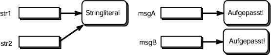

String msg1, msg2, msg3;
msg1 = "Aufgepasst!" ;
msg2 = "Aufgepasst!" ;
msg3 = "Aufgepasst!" ;
Antwort:
Da die Stringliterale identisch sind, wird nur ein Objekt erzeugt.
Die Referenzvariablen msg1, msg2 und msg3
verweisen alle auf dasselbe Objekt.
Beispielprogramm
Hier ist ein Beispielprogramm, das diesen feinen Unterschied zeigt.
Es wäre nützlich, es zu kopieren, einzufügen und zu starten.
class StringliteralBsp
{
public static void main ( String[] args )
{
String str1 = "Stringliteral" ; // ein Literal erzeugen
String str2 = "Stringliteral" ; // str2 verweist auf dasselbe Literal
String msgA = new String ("Aufgepasst!"); // ein Objekt erzeugen
String msgB = new String ("Aufgepasst!"); // ein weiteres Objekt erzeugen
if ( str1 == str2 )
System.out.println( "Das WIRD ausgegeben.");
if ( msgA == msgB )
System.out.println( "Das wird NICHT ausgegeben.");
}
}
|
Hier ist eine Abbildung des Programms (nachdem die ersten vier Anweisungen ausgeführt wurden):

Wie bei vielen Optimierungen, wünschten Sie fast, dass sie es nicht getan hätten.
Es verwirrt die Dinge.
Aber in der Praxis eingesetzte Programme verwenden oft die gleiche Meldung an vielen Stellen (zum Beispiel "ja" und "nein") und es spart Platz und Zeit nur eine Kopie zu haben.
Nur selten werden Sie über diesen Unterschied nachzudenken brauchen.
Jedoch: Ich habe gehört, dass
Sun Microsystems Java Certification Examination
auf diesen Unterschied Wert legt.
Aber der Unterschied zwischen ==
und equals() ist sehr wichtig,
und Sie sind verloren, wenn Sie nicht sorgfältig damit umgehen.
FRAGE 22:
Wie würde sich das Programm ändern, wenn die zweite Anweisung folgendermaßen geändert werden würde:
String str2 = "StringLiteral" ; // kleiner Unterschied